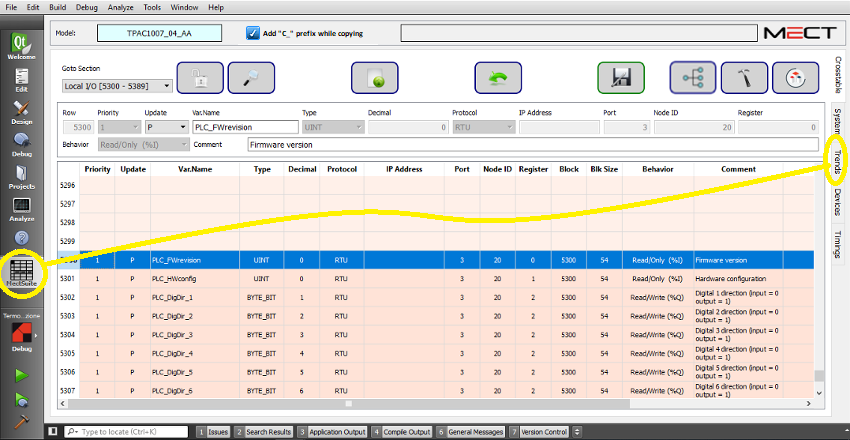

“Trends Editor” configures history variables (variables with S, F, V and X in the “Update” field of “Crosstable Editor”) to plot in the time domain.
In the “Trend Editor” it is possible to setup 4 traces (graph).
To start “Trends Editor” see following figure:

Here the interface:
In a project it is possible to have more than one Trend file.